ສ້າງ ແລະ ຈຳລອງພາບແສງເລຂາຄະນິດ 2 ມິຕິ ແບບໂຕ້ຕອບໄດ້.
ຟຣີທັງໝົດ ແລະ ໃຊ້ງານເທິງເວັບ. ຊອດໂຄ້ດສາມາດ ເບິ່ງໄດ້ທີ່ GitHub.
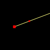
ລັງສີດ່ຽວ
ລັງສີແສງດ່ຽວທີ່ກຳນົດໂດຍສອງຈຸດ.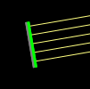
ລຳແສງ
ລຳແສງຂະໜານ ຫຼື ກະຈາຍອອກຈາກທ່ອນຊື່ໜຶ່ງ, ໂດຍຄວາມໜາແໜ້ນສາມາດປັບໄດ້ດ້ວຍແຖບເລື່ອນ 'ຄວາມໜາແໜ້ນລັງສີ'.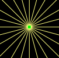
ແຫຼ່ງກຳເນີດແບບຈຸດ
ລັງສີກະຈາຍອອກຈາກຈຸດດຽວ, ຈຳນວນສາມາດປັບໄດ້ດ້ວຍແຖບເລື່ອນ 'ຄວາມໜາແໜ້ນລັງສີ'.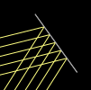
ແວ່ນ
ຈຳລອງການສະທ້ອນຂອງແສງເທິງແວ່ນ.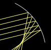
ແວ່ນ (ໂຄ້ງ)
ແວ່ນທີ່ມີຮູບຊົງໂຄ້ງ. ສາມາດເປັນຮູບວົງມົນ, ພາຣາໂບນ, ຫຼື ກຳນົດດ້ວຍສົມຜົນ y = f(x).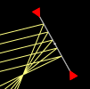
ແວ່ນໂຄ້ງອຸດົມຄະຕິ
ແວ່ນ 'ໂຄ້ງ' ອຸດົມຄະຕິທີ່ເປັນໄປຕາມສົມຜົນຂອງແວ່ນຢ່າງແນ່ນອນ (1/p + 1/q = 1/f). ສາມາດຕັ້ງຄ່າໄລຍະສຸມໄດ້ໂດຍກົງ.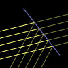
ຕົວແຍກລຳແສງ
ແວ່ນທີ່ຍອມໃຫ້ແສງຕົກກະທົບຜ່ານໄດ້ຕາມເປີເຊັນທີ່ກຳນົດ.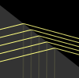
ແກ້ວ
ຈຳລອງການຫັກເຫ ແລະ ການສະທ້ອນຂອງແສງເທິງພື້ນຜິວ.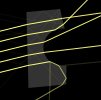
ແກ້ວ (ຮູບຊົງອື່ນໆ)
ແກ້ວທີ່ມີຮູບຊົງໃດໆທີ່ສ້າງຈາກທ່ອນຊື່ ແລະ ສ່ວນໂຄ້ງວົງມົນ, ຫຼື ຮູບຊົງທີ່ກຳນົດດ້ວຍອະສົມຜົນກຳນົດເອງ f(x) < y < g(x).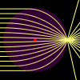
ແກ້ວອັດຕາແສງຫັກເຫປ່ຽນແປງ
ວັດສະດຸທີ່ມີຕຳລາອັດຕາແສງຫັກເຫກຳນົດເອງ n(x,y).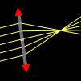
ເລນອຸດົມຄະຕິ
ເລນອຸດົມຄະຕິທີ່ເປັນໄປຕາມສົມຜົນເລນບາງຢ່າງແນ່ນອນ (1/p + 1/q = 1/f). ສາມາດຕັ້ງຄ່າໄລຍະສຸມໄດ້ໂດຍກົງ.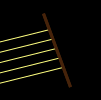
ຕົວບັງແສງ
ຕົວບັງແສງຮູບທ່ອນຊື່ ເຊິ່ງດູດຊັບລັງສີທີ່ມາຕົກກະທົບ.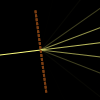
ເກຣດຕິງລ້ຽວເບນ
ເກຣດຕິງລ້ຽວເບນທີ່ແຍກແສງອອກເປັນມຸມຕ່າງໆ ຂຶ້ນກັບຄວາມຍາວຄື້ນ.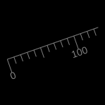
ບັນທັດ
ບັນທັດຈາກຈຸດເລີ່ມຕົ້ນ (ສູນ) ຫາ ອີກຈຸດໜຶ່ງ.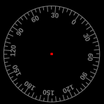
ບັນທັດແທກມຸມ
ບັນທັດແທກມຸມທີ່ກຳນົດຈາກຈຸດສູນກາງ ແລະ ອີກຈຸດໜຶ່ງສຳລັບທິດທາງສູນ. ຫົວໜ່ວຍວັດແທກເປັນອົງສາ.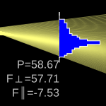
ຕົວວັດແທກ
ເຄື່ອງມືສຳລັບວັດແທກອັດຕາການໄຫຼຂອງພະລັງງານ (P), ອັດຕາການໄຫຼຂອງໂມເມັນຕຳຕັ້ງສາກ (F⊥), ແລະ ອັດຕາການໄຫຼຂອງໂມເມັນຕຳຂະໜານ (F∥) ຜ່ານທ່ອນຊື່ໜຶ່ງ. ຫົວໜ່ວຍແມ່ນຕາມກຳນົດເອງ.ລັງສີ
ສະແດງລັງສີ. ເມື່ອ 'ຄວາມໜາແໜ້ນລັງສີ' ສູງ, ພວກມັນຈະເບິ່ງຄືວ່າເຊື່ອມຕໍ່ກັນ.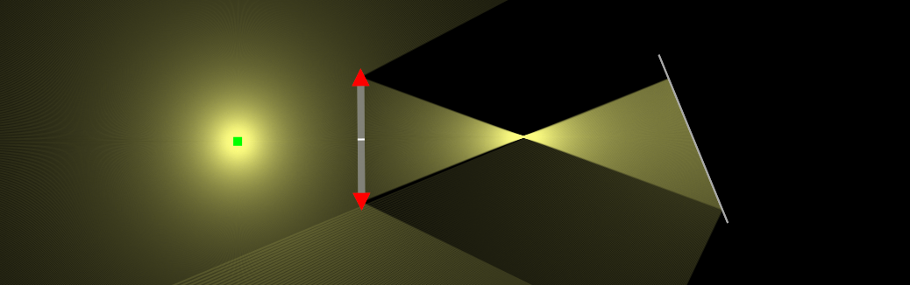
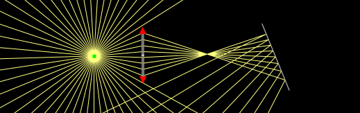
ລັງສີຕໍ່ຍາວ
ສະແດງທັງລັງສີ ແລະ ເສັ້ນຕໍ່ຍາວຂອງມັນ. ສີສົ້ມສະແດງເຖິງເສັ້ນຕໍ່ໄປທາງຫຼັງ, ແລະ ສີເທົາສະແດງເຖິງເສັ້ນຕໍ່ໄປທາງໜ້າ.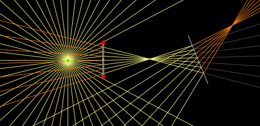
ພາບທັງໝົດ
ສະແດງຕຳແໜ່ງຂອງພາບທັງໝົດ. ຈຸດສີເຫຼືອງສະແດງເຖິງພາບຈິງ, ສີສົ້ມສະແດງເຖິງພາບລວງ, ແລະ ສີເທົາ (ບໍ່ມີໃນຮູບນີ້) ສະແດງເຖິງວັດຖຸລວງ. ໝາຍເຫດວ່າບາງພາບອາດບໍ່ສາມາດກວດຈັບໄດ້ຖ້າ 'ຄວາມໜາແໜ້ນລັງສີ' ບໍ່ສູງພໍ.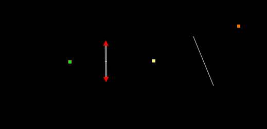
ມຸມມອງຜູ້ສັງເກດ
ຈຳລອງລັງສີ ແລະ ພາບທີ່ເຫັນຈາກຕຳແໜ່ງໃດໜຶ່ງ. ວົງມົນສີຟ້າແມ່ນຜູ້ສັງເກດ. ລັງສີໃດໆທີ່ຕັດຜ່ານມັນຖືວ່າ 'ຖືກສັງເກດເຫັນ'. ຜູ້ສັງເກດບໍ່ຮູ້ວ່າແທ້ຈິງແລ້ວລັງສີເລີ່ມຕົ້ນຈາກໃສ, ແຕ່ອາດຄິດວ່າພວກມັນເລີ່ມຕົ້ນທີ່ຈຸດໃດໜຶ່ງຖ້າມັນຕັດກັນຢູ່ທີ່ນັ້ນ. ລັງສີຈະສະແດງເປັນສີຟ້າ, ແລະ ຈຸດຕ່າງໆເປັນສີເຫຼືອງ (ຈິງ) ຫຼື ສີສົ້ມ (ລວງ).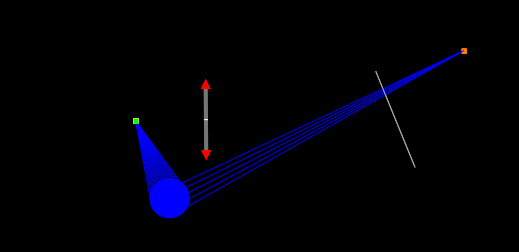
ຈຳລອງສີ
ຈຳລອງສີ (ຄວາມຍາວຄື້ນ) ຂອງແຫຼ່ງກຳເນີດແສງ, ການປະສົມສີ, ການຕອງສີຂອງຕົວບັງແສງ ແລະ ແວ່ນ, ແລະ ການກະຈາຍແສງຂອງແກ້ວ.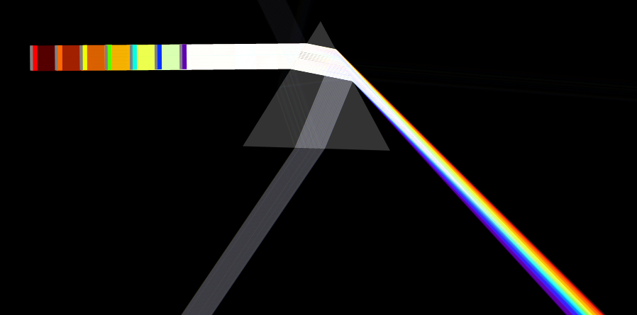